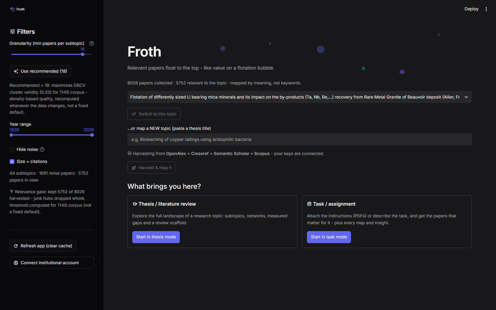

v1 congelada y aprobada. La edición de escala sigue en desarrollo.
Froth
Mapea un campo científico por significado, para que una revisión de literatura deje de ser cinco papers escogidos a dedo.

- El problema
- Una revisión de literatura debería cubrir un campo. En la práctica lees los veinte papers que la búsqueda por palabra clave sacó a flote, y nunca te enteras de lo que te perdiste.
- Cómo lo resolví
- Cada paper se convierte en un vector por significado, no por palabra clave (SPECTER). Un agrupamiento por densidad encuentra los subtemas. Tres vistas los dibujan: burbujas, red con física y guía de lectura.
- El resultado
- Un campo cuya forma se ve: 44 subtemas con nombre, los papers que hacen de puente entre ellos, y una cuenta honesta de lo que el mapa todavía deja suelto.
Medido
44 subtemas de una sola lectura del corpus entero
Cada paper ubicado por significado, los subtemas con nombre, y marcados los papers que hacen de puente entre dos de ellos. Lo que el mapa deja suelto se cuenta en pantalla en vez de esconderse: con similitud 0,75 es el 42 % de los papers dibujados, y ese número es parte del producto.
Empezar una revisión de literatura es leer los cinco papers que alguien te recomendó y esperar que fueran los cinco correctos. Froth lee primero el campo entero y te enseña su forma: qué subtemas existen, qué papers quedan entre dos de ellos, y dónde el corpus es flaco.
Cada umbral de adentro se recalcula para cada corpus en vez de venir fijado, así que la misma herramienta se comporta igual en un campo que nunca ha visto.
Hecho con
- Python
- SPECTER
- HDBSCAN
- UMAP
- Streamlit
- OpenAlex